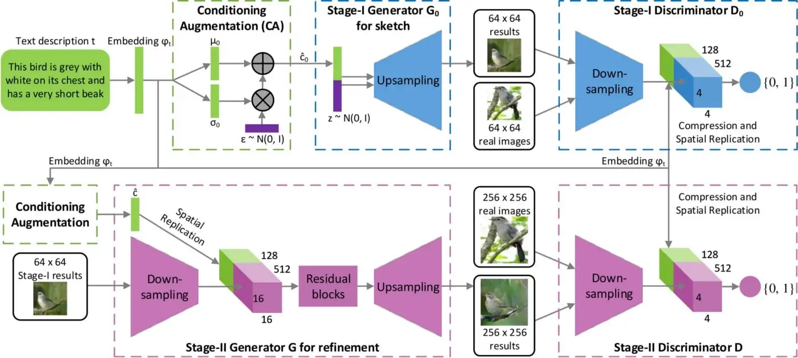

Stack GAN¶
-
todo¶
- Text to Image synthesis
- StackGAN decomposes the hard problem into more manageable sub-problems through a sketch-refinement process.
- The Stage-I GAN sketches the primitive shape and colors of the object based on the given text description, yielding Stage-I low-resolution images.
- The Stage-II GAN takes Stage-I results and text descriptions as inputs and generates high-resolution images with photo-realistic details. It is able to rectify defects in Stage-I results and add compelling details with the refinement process
- Multi Modal. Large no of ims that fit the given text
Architecture¶
-

-
256×256 photo-realistic images conditioned on text descriptions. sketch-refinement process.
- Conditioning Augmentation technique that encourages smoothness in the latent conditioning manifold.
Introduction¶
- Generating photo-realistic images from text is an important problem and has tremendous applications, including photo-editing, computer-aided design, etc
- very difficult to train GAN to generate high-resolution photo-realistic images from text descriptions
- Simply adding more upsampling layers in state-ofthe-art GAN models for generating high-resolution (e.g., 256×256) images generally results in training instability
- supports of natural image distribution and implied model distribution may not overlap in high dimensional pixel space
- more severe as the image resolution increases In analogy to how human painters draw
- By conditioning on the Stage-I result and the text again, Stage-II GAN learns to capture the text information that is omitted by Stage-I GAN and draws more details for the object.
Conditioning Augmentation¶
- Conditioning Augmentation technique to produce additional conditioning variables cˆ
- we randomly sample the latent variables cˆ from an independent Gaussian distribution \(\mathcal{N}(\mu(\varphi_{t}), \Sigma(\varphi_{t}))\), where the mean \(\mu(\varphi_{t})\) and diagonal covariance matrix \(\Sigma(\varphi_{t})\) are functions of the text embedding \(\varphi_{t}\)
- The proposed Conditioning Augmentation yields more training pairs given a small number of imagetext pairs, and thus encourages robustness to small perturbations along the conditioning manifold
- regularization term to the objective of the generator during training \(\(D_{KL}(\mathcal{N}(\mu(\varphi_{t}), \Sigma(\varphi_{t})) || \mathcal{N}(0,I))\)\)
- KL Divergence between the standard Gaussian distribution and the conditioning Gaussian distribution
- The randomness introduced in the Conditioning Augmentation is beneficial for modeling text to image translation as the same sentence usually corresponds to objects with various poses and appearances.
Stage-I GAN¶
- \(\varphi_{t}\) be the text embedding of the given description
- The Gaussian conditioning variables \(\hat c_{0}\) for text embedding are sampled from N(μ0(φt),Ʃ0(φt)) to capture the meaning of \(\varphi_{t}\) with variations
- Conditioned on cˆ0 and random variable z, Stage-I GAN trains the discriminator D0 and the generator G0 by alternatively maximizing \(\mathcal{L}_{D_{0}}\) in Eq. (3) and minimizing \(\mathcal{L}_{G_{0}}\)
-
\[\mathcal{L}_{D_{0}} = \mathbb{E}_{(I_{0},t)\sim p_{data}}[log D_{0}(I_{0}, \varphi_{t})]+\mathbb{E}_{z \sim p_{z}, t \sim p_{data}}[log(1- D_{0}(G_{0}(z , \hat{c_{0}}, \varphi_{t})))]\]
-
\[\mathcal{L}_{G_{0}}= \mathbb{E}_{z \sim p_{z}, t \sim p_{data}}[log(1- D_{0}(G_{0}(z, \hat{c_{0}}),\varphi_{t}))] + \lambda D_{KL}(\mathcal{N}(\mu_{0}(\varphi_{t}), \Sigma_{0}(\varphi_{t}))|| \mathcal{N}(0, I))\]
- where the real image I0 and the text description t are from the true data distribution pdata
- z is a noise vector randomly sampled from a given distribution pz (Gaussian distribution in this paper
- λ is a regularization parameter that balances the two terms
- λ = 1 for all the exps.
- both \(\mu_{0}(\varphi_{t})\) and \(\Sigma_{0}(\varphi_{t})\) are learned jointly with the rest of the network.
- For the generator G0, to obtain text conditioning variable cˆ0, the text embedding φt is first fed into a fully connected layer to generate μ0 and σ0 (σ0 are the values in the diagonal of Ʃ0) for the Gaussian distribution N(μ0(φt),Ʃ0(φt)
- ˆ0 are then sampled from the Gaussian distribution cˆ = μ +σ ⊙ε
- trained by alternatively maximizing LD in Eq. (5) and minimizing LG in Eq. (6),
- concatenated with a Nz dimensional noise vector to generate a W0 × H0 image by a series of up-sampling blocks
- the text embedding φt is first compressed to Nd dimensions using a fully-connected layer
- and then spatially replicated to form a Md × Md × Nd tensor.
- the image is fed through a series of down-sampling blocks until it has Md × Md spatial dimension
- Then, the image filter map is concatenated along the channel dimension with the text tensor
- The resulting tensor is further fed to a 1×1 convolutional layer to jointly learn features across the image and the text.
- Finally, a fullyconnected layer with one node is used to produce the decision score.
Stage-II GAN¶
- Low-resolution images generated by Stage-I GAN usually lack vivid object parts and might contain shape distortions.
- is conditioned on low-resolution images and also the text embedding again to correct defects in Stage-I results
- The Stage-II GAN completes previously ignored text information to generate more photo-realistic details.
- Conditioning on the low-resolution result s0 = G0(z, cˆ0) and Gaussian latent variables cˆ
- Different from the original GAN formulation, the random noise z is not used in this stage with the assumption that the randomness has already been preserved by s0
- Gaussian conditioning variables cˆ used in this stage and cˆ0 used in Stage-I GAN share the same pre-trained text encoder, generating the same
- text embedding φt.
- StageI and Stage-II Conditioning Augmentation have different fully connected layers for generating different means and standard deviations
- In this way, Stage-II GAN learns to capture useful information in the text embedding that is omitted by Stage-I GAN.
Model Architecture.¶
- Stage-II generator as an encoder-decoder network with residual blocks
- text embedding φt is used to generate the Ng dimensional text conditioning vector cˆ
- spatially replicated to form a Mg ×Mg ×Ng tensor
- Stage-I result s0 generated by Stage-I GAN is fed into several downsampling blocks (i.e., encoder) until it has a spatial size of Mg × Mg
- The image features and the text features are concatenated along the channel dimension
- The encoded image features coupled with text features are fed into several residual blocks, which are designed to learn multi-modal representations across image and text feature
-
series of up-sampling layers
-
are used to generate a W ⇥H high-resolution
- Such a generator is able to help rectify defects in the input image while add
- more details to generate the realistic high-resolution image.
- For the discriminator, its structure is similar to that of Stage-I discriminator with only extra down-sampling blocks since the image size is larger in this stage
- To explicitly enforce GAN to learn better alignment between the image and the conditioning text, rather than using the vanilla discriminator, we adopt the matching-aware discriminator
- During training, the discriminator takes real images and their corresponding text descriptions as positive sample pairs, whereas negative sample pairs consist of two groups
- Implementation details
- up-sampling blocks consist of the nearest-neighbor upsampling followed by a 3⇥3 stride 1 convolution
- Batch normalization [11] and ReLU activation are applied after every convolution except the last one
- The residual blocks consist of 3⇥3 stride 1 convolutions, Batch normalization and ReLU. Two residual blocks are used in 128⇥128 StackGAN models while four are used in 256⇥256 models. The down-sampling blocks consist of 4⇥4 stride 2 convolutions, Batch normalization and LeakyReLU, except that the first one does not have Batch normalization.
- Bydefault,Ng =128,Nz =100,Mg =16,Md =4, Nd = 128, W0 = H0 = 64 and W = H = 256
- For training, we first iteratively train D0 and G0 of Stage-I GAN for 600 epochs by fixing Stage-II GAN
- Then we iteratively train D and G of Stage-II GAN for another 600 epochs by fixing Stage-I GAN.
- All networks are trained using ADAM solver with batch size 64 and an initial learning rate of 0.0002. The learning rate is decayed to 1/2 of its previous value every 100 epochs.
Datasets and evaluation metrics CUB¶
- Oxford-102
- MS COCO
- Evaluation metrics
- inception score
- I = exp(ExDKL(p(y|x) || p(y))),
- where x denotes one generated sample, and y is the label predicted by the Inception model
- he intuition behind this metric is that good models should generate diverse but meaningful images.
- Therefore, the KL divergence between the marginal distribution p(y) and the conditional distribution p(y|x) should be larg
Conclusions¶
- The proposed method decomposes the text-to-image synthesis to a novel sketch-refinement process.
- Stage-I GAN sketches the object following basic color and shape constraints from given text descriptions. Stage-II GAN corrects the defects in Stage-I results and adds more details, yielding higher resolution images with better image quality
- Compared to existing text-to-image generative models, our method generates higher resolution images (e.g., 256⇥256) with more photo-realistic details and diversity. *